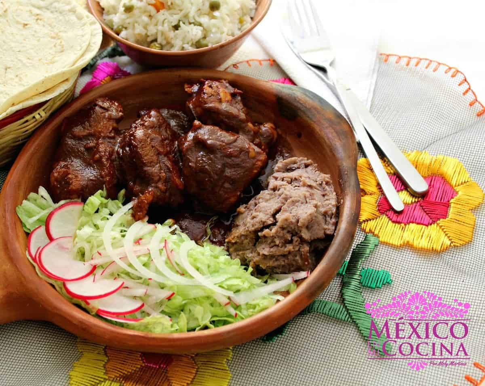

Cochito al Horno

Description
Chiapas Roasted Pork, it is known as "Cochito al Horno". It is a mixture of pork meat, ancho peppers, and spices. Now the most recognized recipe from the State of Chiapas, it is a special dish with a surprisingly easy preparation.
Ingredients
- 2 Lbs of pork
- 6 large Ancho peppers
- 2 medium tomatoes
- 1/2 onion
- 3 garlic cloves
- 6 Bay leaves
- 1 large stick of cinnamon
- 5 g of dried thyme
- 1/2 cup of white vinegar
- Salt to taste
Steps
- Place the ancho peppers in a bowl with 3 cups of hot water and let soak for about 15 minutes. Do not discard the water, as it will be used for the sauce
- In your blender, place the tomatoes, onion, garlic, bay leaves, cloves, cinnamon, thyme, vinegar, and salt. Add the ancho peppers and 2 cups of the soaking water (don’t throw the rest of the water away). Blend for about 5 minutes and then strain the sauce.
- In a deep pot, add the pieces of meat cut into medium chunks (no greater than 10 cm / 4 in.). Arrange the pieces evenly at the bottom of the pot, then pour enough sauce into the pot to cover all the meat. If necessary, you can use some of the leftover soaking water.
- Place the lid on the pot and cook over high heat. Once it starts boiling, reduce the heat and continue to cook for 45 more minutes, or until the meat is cooked. The sauce will be reduced, but don’t worry. Add one cup of water and place the stew (with the pot uncoverein the oven to brown for 20 minutes at 180ºIt will be delicious!
Notes
- If you're making this stew to freeze later, try to store it in small portions, in order to avoid overcooking them when reheating